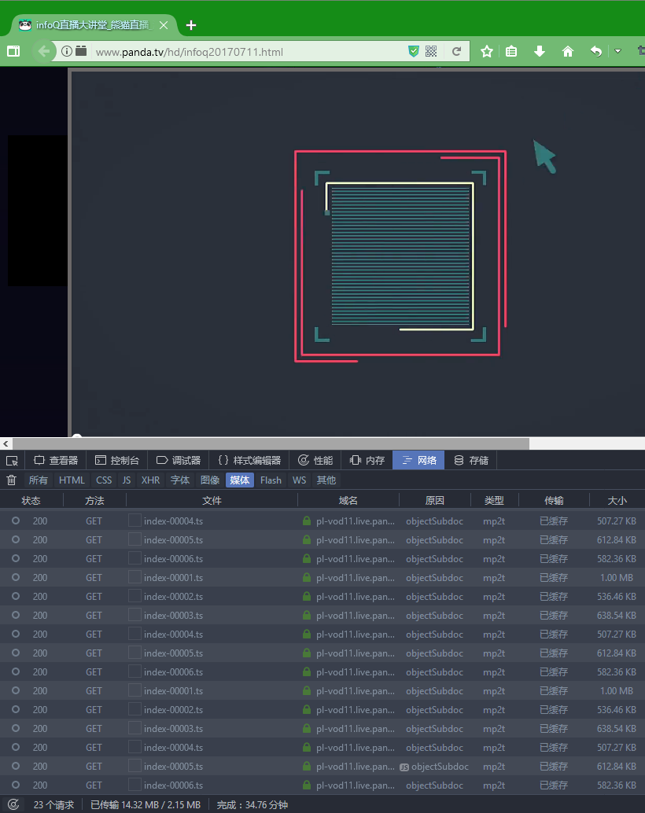
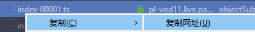
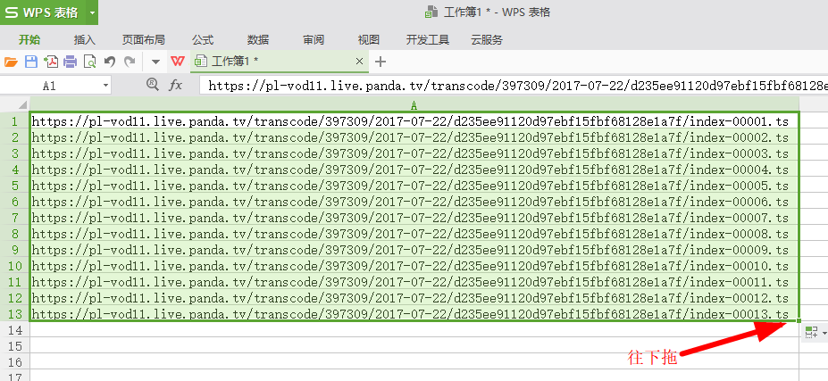
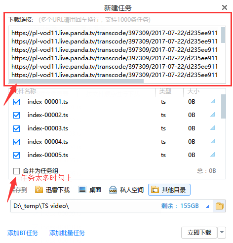
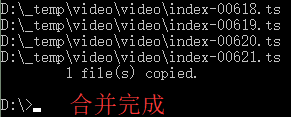
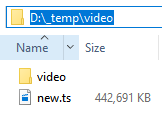

昨晚在Panda TV看到infoQ的一个视频想下载，播放器使用的是Flash Player，打开浏览器开发者工具->网络->媒体，看到有很多.ts后缀的视频文件，视频是被分成了一个个片段下载的。将视频进度拖到其他位置，就下载对应的片段，由于.ts视频不可以分段后直接解码，所以可以直接播放分段后的.ts视频。
视频被分成了许多小片段，如何得到完整的视频呢
0x00. 视频片段是按文件名最后的数值排列的，按照这个规律，复制第一个片段的地址，放到Excel等表格工具里。


0x01. 选中后按住右下角的小方点往下拖就可以自动生成之后的地址了，一直拖到生成到视频的最后一个片段的地址，将生成的地址复制下来。

0x02. 打开迅雷，一般会自动新建任务并自动粘贴复制好的地址，若没有则手动新建任务并粘贴复制好的地址（现在迅雷最多支持同时新建1000个任务，太多的可以分开一些），任务太多的最好勾上[合并为任务组]，以免清理任务的麻烦。新建一个文件夹专门存放下载的视频。

0x03. 下载完成后使用CMD命令合并即可。
例如：1copy/b E:\temps\*.ts E:\temps\new.ts
可以参考这篇文章 >>>无需软件合并多个TS流文件

0x04. 得到可以正常播放的完整视频，这样就Done了。
